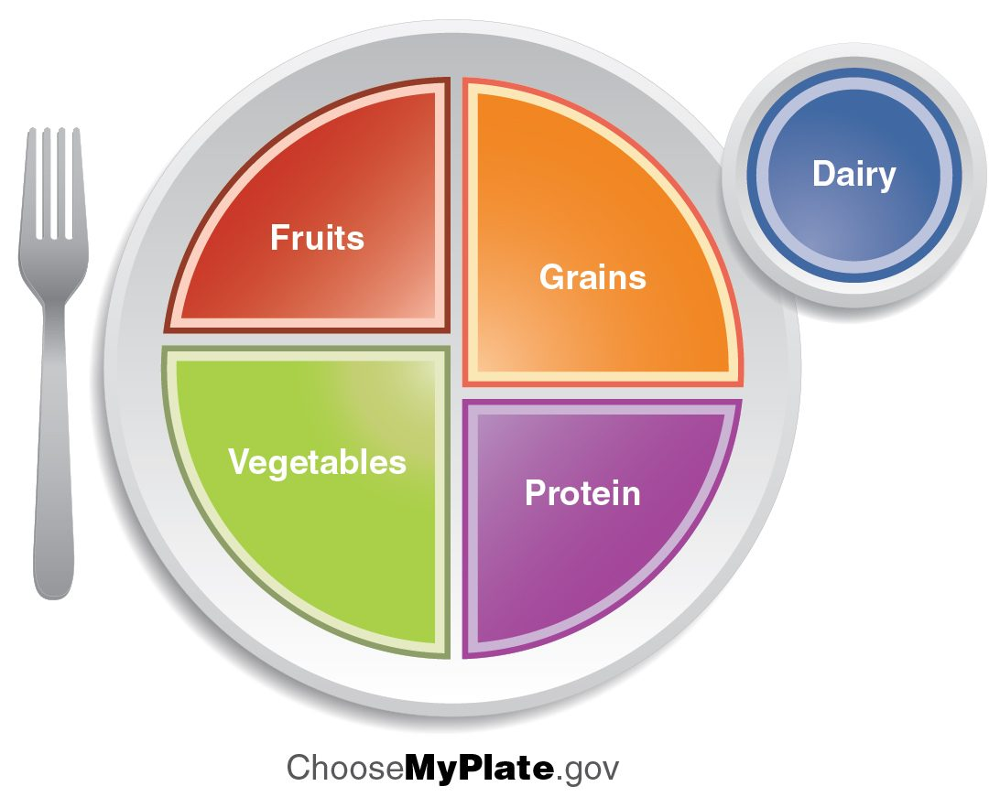

Every ATP your cells spend ends as heat, and every calorie you eat is either spent or stored. This page covers both sides: your basal metabolic rate and total energy use, energy balance and body weight, how your hypothalamus controls appetite, and thermoregulation: how heat loss by radiation, conduction, convection and evaporation is matched to heat production, so your core temperature stays within a fraction of a degree. It ends with what happens when that control is overwhelmed: heat exhaustion, heat stroke, hypothermia and frostbite.
Metabolic rate
Lie still in a warm room before breakfast, and you still use about 1 kcal every minute. Your heart beats, your breathing muscles work, your sodium–potassium pumps run, and your liver and brain keep working. All of it ends as heat.
Your metabolic rate is the rate at which your body uses energy, in kcal per hour or per day. Because nearly all of that energy is released as heat, it is also the rate at which you make heat.
- The basal metabolic rate (BMR) is the metabolic rate of a person awake but lying at rest, 12 hours after eating, in a comfortably warm room. It is the energy cost of staying alive: about 1,200 to 1,800 kcal a day for most adults.
- The total metabolic rate is the energy used over a whole day in ordinary life. It has three parts: the BMR (usually about 60 to 70% of the total), the energy used to digest, absorb and store food (about 10%), and physical activity (the rest, and by far the most variable part).
Metabolic rate is measured most often by the oxygen a person uses. Almost all ATP is made by oxidative phosphorylation, so oxygen use tracks energy use: for each liter of oxygen consumed, about 4.8 kcal of energy is released from fuel on an ordinary mixed diet.
Worked example 1: metabolic rate from oxygen use
Problem. A 70 kg man lying at rest uses 250 mL of oxygen per minute. What is his basal metabolic rate in kcal per day?
- Oxygen per day. 250 mL/min × 60 min/h × 24 h/day = 360,000 mL/day = 360 L/day.
- Energy per liter of oxygen. About 4.8 kcal/L.
- Multiply. 360 L/day × 4.8 kcal/L = 1,728 kcal/day.
Answer. About 1,700 kcal a day, or about 72 kcal an hour: roughly the heat given off by an 80-watt light bulb.
What changes metabolic rate
- Body size and composition. Lean tissue, such as muscle, liver and brain, uses far more energy than fat. More lean mass means a higher BMR.
- Age and sex. BMR falls slowly with age, mostly as muscle is lost. Men average higher BMRs than women of the same weight, mostly because they carry more muscle.
- Thyroid hormones. They set the number of sodium–potassium pumps and mitochondria in cells. Hyperthyroidism can raise BMR by half or more; hypothyroidism can lower it by a third or more.
- Sympathetic activity and epinephrine raise it quickly, as in stress or cold.
- Body temperature. Warmer cells run faster: a fever raises metabolic rate by about 10 to 12% for each degree Celsius.
- Growth and pregnancy raise it; long fasting and weight loss lower it.
- Physical activity changes the total metabolic rate the most: hard exercise can raise the rate of energy use ten- to twentyfold for a while.
Energy balance
A bank account stays level when deposits equal withdrawals. Your energy stores work the same way.
Energy balance is the relation between the energy you take in as food and the energy you spend (your total metabolic rate):
- Intake = spending: body energy stores, and so body weight, stay stable.
- Intake > spending (positive balance): the extra is stored, mostly as fat, and weight rises.
- Intake < spending (negative balance): stores are drawn down, and weight falls.
Worked example 2: a small daily surplus
Problem. A woman spends 2,000 kcal a day. She starts eating one extra 250 kcal snack every day and changes nothing else. Adipose tissue holds about 7,700 kcal per kilogram. About how much fat will she store in the first 30 days?
- Surplus per day. 250 kcal.
- Surplus over 30 days. 250 × 30 = 7,500 kcal.
- Convert to fat. 7,500 ÷ 7,700 ≈ 1.0 kg.
Answer. About 1 kg in the first month. It will not keep growing at that pace, as the next paragraph explains.
Energy balance is not a fixed sum, because spending changes as weight changes. A heavier body uses more energy to maintain and move, so a steady surplus produces a gain that slows and levels off at a new, higher weight. The reverse is true of weight loss: as weight falls, spending falls too, and appetite rises, so loss slows even when the diet is kept up.
Body mass index
The body mass index (BMI) is weight in kilograms divided by the square of height in meters. It is a quick screen for whether a person's weight is in the range linked to the lowest health risk.
Worked example 3: calculating BMI
Problem. A man is 1.75 m tall and weighs 85 kg. What is his BMI, and which category is it in?
- Square the height. 1.75 × 1.75 = 3.06 m².
- Divide. 85 ÷ 3.06 = 27.8 kg/m².
- Classify. 27.8 falls between 25 and 29.9.
Answer. BMI about 27.8: overweight.
| BMI (kg/m²) | Category (adults) |
|---|---|
| Below 18.5 | Underweight |
| 18.5 to 24.9 | Healthy weight |
| 25 to 29.9 | Overweight |
| 30 or more | Obesity |
BMI does not measure fat. A muscular athlete can have a BMI over 30 with little fat, and an older adult who has lost muscle can have a normal BMI with a lot of fat. Where fat sits matters too: fat inside the abdomen, suggested by a large waist, carries more risk of type 2 diabetes and heart disease than fat under the skin of the hips. People of South Asian and East Asian ancestry develop these risks at lower BMIs, so lower cutoffs are often used for them. BMI is a screening tool, not a diagnosis.
Dietary guidelines
Dietary guidelines are official advice on what to eat, drawn from studies of which eating patterns go with the best health. In the United States they are revised every five years. Several core messages have been steady for decades: eat mostly vegetables, fruits, whole grains, legumes, nuts and unprocessed protein foods; limit added sugars, saturated fat and sodium; and match total energy intake to energy spending. The plate in Figure 1, the U.S. picture from 2011, turns this into one meal. The 2025–2030 edition, released in January 2026, went back to a food pyramid, so check which picture your course uses.

Appetite regulation
You rarely count calories, yet most adults' weight changes by only a few kilograms over years, even though they eat nearly a million kilocalories a year. Something is matching intake to spending without your help.
Appetite regulation is the control of hunger and eating, mainly by the hypothalamus. Neurons in a region at its base receive signals from the gut, the pancreas and adipose tissue. One group of neurons drives hunger and lowers energy spending; another group suppresses hunger and raises spending. The balance between them sets how much you want to eat.
Short-term signals: one meal at a time
- Ghrelin (named for its first-found action, making the pituitary release growth hormone) is a hormone released by the empty stomach. Its level rises before usual mealtimes and falls after eating. It acts on the hypothalamus to make you hungry.
- Stretch of the stomach is sensed by stretch-sensitive sensory receptors, and the vagus nerve carries the signal to the brainstem.
- Gut hormones released as food reaches the small intestine, including cholecystokinin and GLP-1, act on the brainstem and hypothalamus to end the meal.
Together these produce satiety (sati- = enough): the sense of fullness that ends a meal and delays the next one.
Long-term signals: body energy stores
- Leptin, which you met with the endocrine organs, is released by fat cells in proportion to how much fat they hold. High leptin reduces hunger and allows energy spending; falling leptin, as during weight loss, drives hunger and saves energy.
- Insulin also acts on the hypothalamus and reduces hunger over the longer term.
Appetite is not only these signals. Habit, stress, the smell and taste of food, and the reward circuits of the brain can all override them, which is part of why highly palatable food is easy to overeat. In most people with obesity, leptin levels are high, but the hypothalamus responds to it weakly (leptin resistance), so it does not bring intake down.
| Ghrelin | Leptin | |
|---|---|---|
| Made by | Stomach | Adipose tissue |
| Released when | The stomach is empty, before meals | Fat stores are large |
| Effect on hunger | Raises it | Lowers it |
| Time scale | Meal to meal (hours) | Long term (days to months) |
| After weight loss | Tends to rise | Falls |
Core and shell temperature
On a cold day, your fingertips may be at 20 °C while your heart sits at about 37 °C. Both are normal. Your body is not one temperature.
- The core temperature is the temperature of the deep tissues: the brain, the organs of the chest and abdomen. It is held within a narrow range, because enzymes and neurons work properly only within it.
- The shell is the skin, the fat under it and the limbs. Its temperature varies widely with blood flow and surroundings. The shell is where heat is gained from, and lost to, the environment.
The boundary between them moves. In the cold, skin vessels narrow and the shell thickens, insulating the core. In the heat, skin vessels widen, warm blood reaches the surface, and the shell becomes thin.
Normal core temperature
In healthy adults, core temperature averages about 36.6 to 37 °C, depending on where it is measured. It is lowest in the early morning and highest in the late afternoon, a daily swing of about 0.5 °C set by the body clock, and in women it runs about 0.3 to 0.5 °C higher in the two weeks before each period. Readings differ by site: the blood in the pulmonary artery is the clinical reference; rectal readings run slightly higher and change slowly; oral and ear readings are a little lower; armpit readings are lower still and least reliable.
How heat moves
You met the four ways heat is exchanged with the environment in the skin chapter. Every one of them depends on a gradient: heat flows from warmer to cooler, and water evaporates faster into dry air than humid air.
| Radiation | Conduction | Convection | Evaporation | |
|---|---|---|---|---|
| How heat moves | As infrared rays between surfaces that are not touching | Directly to an object your skin touches | Carried off by air or water flowing past your skin | As water on your skin or in your airways turns to vapor |
| Needs | Surroundings cooler than your skin | Contact with a cooler object | Cooler air or water, moving | Air that is not saturated with water vapor |
| Example | Heat lost to cold walls in a room | Sitting on cold stone | Wind; swimming in cool water | Sweat drying on your skin |
| Share of heat loss at rest in a cool room | About 60% | About 3% | About 15% | About 20% |
| Can it add heat to you? | Yes, from the sun or a fire | Yes, from a hot surface | Yes, in air hotter than skin | No: it only removes heat |
| In hot air above skin temperature | Adds heat | Adds heat if the surface is hot | Adds heat | The only way left to lose heat |
The last row is why sweating matters so much. Once the air is hotter than your skin, about 35 °C, the first three routes run backward and add heat. Evaporation is the only route left. Turning water into vapor takes a lot of energy: each liter of sweat that evaporates removes about 580 kcal from your skin. Sweat that drips off without evaporating removes almost none. In humid air, evaporation slows, and sweat drips.
Worked example 4: how much sweat does a runner need?
Problem. A runner produces 700 kcal of heat per hour. On a hot day the air is at 36 °C, so radiation and convection add heat instead of removing it. How much sweat must evaporate each hour just to remove the heat he makes?
- Heat to remove. 700 kcal/h (and more, since the hot air is adding some).
- Heat removed per liter evaporated. About 580 kcal/L.
- Divide. 700 ÷ 580 = 1.2 L/h.
Answer. At least 1.2 L of sweat must evaporate every hour. If the air is humid and some of the sweat drips off, he must sweat even more, and he loses that much water from his body.
Thermoregulation in full
Thermoregulation is the control of core temperature by balancing heat production against heat loss. You met the basic loop for body temperature. Here is the full version (Figure 2).
The sensors and the control center
- Peripheral sensors: warm-sensitive and cold-sensitive thermoreceptors in the skin. They report the shell and give early warning, before the core has changed.
- Central sensors: temperature-sensitive neurons in the hypothalamus itself, and others in the spinal cord and abdomen, report the core.
- Control center: the preoptic area at the front of the hypothalamus. It compares the combined input with its set point and drives heat-loss or heat-gain responses. Because it receives skin input, you start to shiver in cold wind before your core temperature has fallen at all.
![A loop diagram of temperature control around a central label reading temperature homeostasis, 36.5 to 37.5 degrees Celsius. Upper half: body temperature is low (a snowflake picture); temperature-sensing neurons in the hypothalamus (drawn as a section of the brain) stimulate heat-producing mechanisms; a box shows narrowed surface arteries in the skin reducing heat loss, a shivering muscle, and the thyroid gland stimulating cells to make more heat; body temperature then rises. Lower half: body temperature is high (a sun picture); the hypothalamus starts heat-releasing mechanisms; a box shows widened surface arteries flushing the skin, a sweat gland in the skin starting to sweat, and the thyroid gland reducing heat production; body temperature then falls.](../figures/os-24-23.jpg)
When the body is too warm
- Skin vessels widen. Warm blood from the core flows to the skin, which loses heat to cooler surroundings and warms the sweat to speed evaporation. Skin blood flow can rise from about 0.3 L/min to 6 to 8 L/min in severe heat stress, taking a large share of cardiac output. In most of your skin, this widening comes mainly from active dilation by sympathetic cholinergic nerves; in the palms, soles and lips it comes from withdrawal of sympathetic constrictor tone.
- Sweating. Sympathetic cholinergic fibers release acetylcholine onto the eccrine sweat glands. Sweat rates can reach 1 to 2 L an hour, and more after training in the heat.
- Behavior. You seek shade, remove clothing and slow down.
When the body is too cold
- Skin vessels narrow. Sympathetic nerves release norepinephrine onto the smooth muscle of skin arterioles. Less warm blood reaches the surface, and the shell becomes insulation. In the limbs, cool blood returning in deep veins that run beside the arteries is warmed by them, so less heat reaches the hands and feet.
- Shivering. Rapid, involuntary, unsynchronized contractions of skeletal muscle. They do no outside work, so almost all their energy becomes heat: shivering can raise heat production three- to fivefold for a time.
- Nonshivering thermogenesis. Nonshivering thermogenesis (thermo- = heat, -genesis = making) is heat made without muscle contraction, mainly in brown adipose tissue. Sympathetic nerves release norepinephrine onto brown fat cells, which break down their fat and run their mitochondria with a channel protein that lets H+ leak back across the inner membrane. The electron transport chain runs flat out, but the energy leaves as heat instead of ATP. Adults keep small deposits of brown fat, mostly in the neck, above the collarbones and along the spine; how much heat they add in adults is still being studied.
- Hair. The arrector pili muscles raise the hairs ("goose bumps"). In furry mammals that traps insulating air; in humans the effect is tiny.
- Behavior. Putting on clothes, finding shelter and moving about. For people, behavior is the most powerful defense against cold.
- Thyroid hormones. Long exposure to cold raises thyroid hormone activity a little, and with it heat production; in adults this is slow and minor.
The whole loop
| Loop part | Core too warm | Core too cold |
|---|---|---|
| Stimulus | Rise in core or skin temperature | Fall in core or skin temperature |
| Sensory receptor (sensor) | Warm thermoreceptors in skin; temperature-sensitive neurons in the hypothalamus | Cold thermoreceptors in skin; temperature-sensitive neurons in the hypothalamus |
| Afferent pathway | Sensory neurons to the spinal cord and up to the hypothalamus | Sensory neurons to the spinal cord and up to the hypothalamus |
| Control center | Preoptic area of the hypothalamus | Preoptic area of the hypothalamus |
| Efferent pathway | Sympathetic cholinergic nerves to sweat glands and skin vessels; less constrictor tone | Sympathetic nerves releasing norepinephrine to skin arterioles and brown fat; somatic motor neurons for shivering |
| Effector | Sweat glands; skin blood vessels | Skin arterioles; skeletal muscle; brown adipose tissue |
| Response | More heat lost by evaporation, radiation and convection | Less heat lost; more heat made |
| Feedback type | Negative | Negative |
A fever is different. As you saw with the immune system, pyrogens raise the set point itself, and this same loop then works to hold the higher value. In the heat illnesses below, the set point is normal, and the loop is simply overwhelmed.
Heat illness
Hyperthermia (hyper- = above, therm- = heat) is a rise in core temperature because heat gain exceeds heat loss, with a normal set point. It happens when heat production is high (hard exercise), heat loss is blocked (hot, humid, still air; heavy clothing), or the effectors are weak (older age, dehydration, some drugs).
Heat exhaustion
Heat exhaustion is the milder form. Heavy sweating loses water and salt, and wide skin vessels hold a large share of the blood volume. Less blood returns to the heart, stroke volume falls, and the heart beats fast to compensate. The person feels weak, dizzy and nauseated, with a headache, and may faint. Core temperature is normal or raised, up to about 40 °C, but the brain works normally. Rest in a cool place, lying down with the legs raised, and fluids with salt bring recovery.
Heat stroke
Heat stroke is a core temperature above about 40 °C with brain dysfunction: confusion, odd behavior, seizures or coma. It is an emergency.
- Heat gain has outrun every heat-loss response, and core temperature keeps climbing.
- Heat speeds chemical reactions in every cell, so they make still more heat: a harmful positive feedback loop.
- Above about 41 to 42 °C, proteins begin to unfold and cell membranes leak. Neurons fail first, then the gut lining, liver, kidneys and blood clotting.
- Survival depends on how long the core stays that hot.
It comes in two forms. Exertional heat stroke strikes a fit person exercising hard, often still sweating. Classic heat stroke strikes older or ill people during heat waves, often with hot, dry skin. Treatment is to cool the core as fast as possible, best by immersing the body in cold water, before transport if that can be done safely. Fever-reducing drugs do not help, because the set point is not raised.
| Heat exhaustion | Heat stroke | |
|---|---|---|
| Core temperature | Normal to about 40 °C | Above about 40 °C |
| Brain function | Normal (may faint briefly) | Confusion, seizures or coma |
| Skin | Pale, sweaty | Hot; sweaty in exertional, often dry in classic heat stroke |
| Main problem | Loss of water and salt; blood pooled in the skin | Cell damage from heat itself |
| Treatment | Rest in the cool, fluids and salt | Rapid cooling, ideally cold-water immersion; emergency care |
Heat acclimatization protects. Over one to two weeks of exercise in the heat, a person starts sweating sooner and more, loses less salt in each liter of sweat (through aldosterone), and expands plasma volume, so core temperature and heart rate rise less at the same workload.
Cold illness
Hypothermia
Hypothermia (hypo- = below) is a core temperature below 35 °C. It happens when heat loss exceeds heat production: immersion in cold water, which removes heat about 25 times faster than air at the same temperature; wet clothing and wind; or failing defenses, as with alcohol (which widens skin vessels and dulls judgment), older age, and some drugs.
- Mild (35 to 32 °C): intense shivering, fast heart rate, clumsy hands, poor judgment.
- Moderate (32 to 28 °C): shivering fades and stops, and heat production falls with it; confusion and drowsiness; slow heart rate and breathing.
- Severe (below 28 °C): unconsciousness; the cold heart is prone to fatal rhythm disturbances, especially ventricular fibrillation, even from rough handling; pulses may be too weak to feel.
Cold slows every reaction, including the brain's use of oxygen, so a severely hypothermic brain survives much longer without circulation than a warm one. That is why rescuers are taught that a hypothermic patient is "not dead until warm and dead": resuscitation continues while the person is rewarmed.
Frostbite
Frostbite is freezing of tissue, usually the fingers, toes, nose, ears and cheeks, where skin vessels narrow most and the shell is thinnest. Ice crystals form in the tissue fluid and draw water out of cells, and the small vessels are damaged, so clots form and the tissue loses its blood supply after thawing. Mild cold injury without freezing (frostnip) recovers fully. Frostbite is rewarmed quickly in warm water at about 37 to 39 °C, but only once there is no risk of refreezing, because thawing and refreezing does more damage than staying frozen.